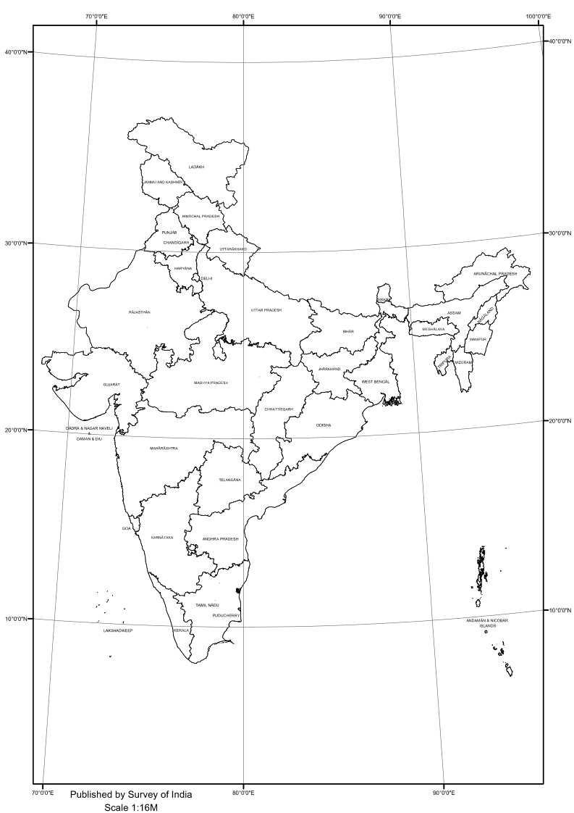
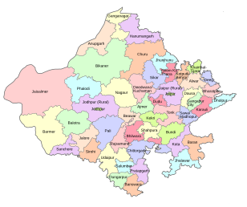

Class 10 · Social Science · Chapter 8
Agriculture
Types, crops, reforms and challenges.
Chapter at a Glance
Types is an important part of Agriculture. Understand its meaning, purpose and connection with the other ideas in this chapter. Write one example in your notebook.
crops is an important part of Agriculture. Understand its meaning, purpose and connection with the other ideas in this chapter. Write one example in your notebook.
reforms is an important part of Agriculture. Understand its meaning, purpose and connection with the other ideas in this chapter. Write one example in your notebook.
challenges is an important part of Agriculture. Understand its meaning, purpose and connection with the other ideas in this chapter. Write one example in your notebook.
Detailed Explanation
Agriculture को समझने के लिए पहले इसके मूल शब्दों और उनके आपसी संबंध को पहचानें। इस chapter में types, crops, reforms and challenges. का क्रमबद्ध अध्ययन किया जाता है। हर concept की परिभाषा लिखें, उसका कारण या नियम समझें और कम-से-कम एक सही उदाहरण जोड़ें।
परीक्षा में केवल याद किया हुआ वाक्य न लिखें। प्रश्न के command word—define, explain, compare, calculate या justify—के अनुसार उत्तर बनाएं। Begin with the definition, explain the process in order, add a labelled diagram where useful and finish with an example.
Definitions
- Types
- Types इस chapter के मुख्य विचार “Agriculture” से जुड़ा शब्द है। इसकी सही परिभाषा, विशेषता और एक उदाहरण याद रखें।
- crops
- crops इस chapter के मुख्य विचार “Agriculture” से जुड़ा शब्द है। इसकी सही परिभाषा, विशेषता और एक उदाहरण याद रखें।
- reforms
- reforms इस chapter के मुख्य विचार “Agriculture” से जुड़ा शब्द है। इसकी सही परिभाषा, विशेषता और एक उदाहरण याद रखें।
- challenges
- challenges इस chapter के मुख्य विचार “Agriculture” से जुड़ा शब्द है। इसकी सही परिभाषा, विशेषता और एक उदाहरण याद रखें।
Concept Chart
Subject Maps



Key Terms
| Term | What to learn |
|---|---|
| Types | Key idea connected with Agriculture; revise its definition and one example. |
| crops | Key idea connected with Agriculture; revise its definition and one example. |
| reforms | Key idea connected with Agriculture; revise its definition and one example. |
| challenges | Key idea connected with Agriculture; revise its definition and one example. |
Activity / Practice
RBSE–NCERT Answer Writing
- Start with a correct definition or central idea.
- Use headings and write the concepts in a logical order.
- Add an example, formula, map, quotation or labelled diagram where relevant.
- Underline key terms and recheck spelling, units and facts.
- Finish with a one-line conclusion linked to the question.